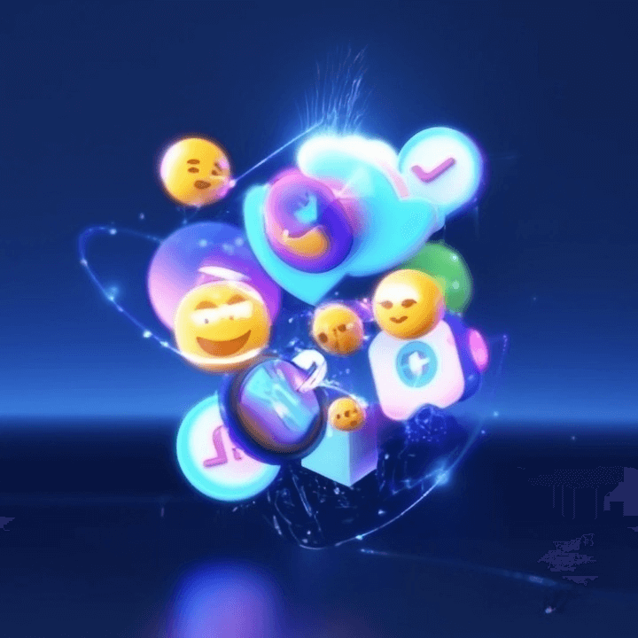

Top Emoji Trends in 2025

1. Introduction: Understanding the Role of Emojis in Modern Communication
Emojis have become an integral part of online communication, allowing users to convey emotions and messages in a more visual and engaging way. In 2025, the world of emojis has evolved significantly, with new emojis being introduced and existing ones being used in different contexts. Understanding these trends can provide valuable insights into the changing landscape of online communication and modern culture. Join us as we explore the top emoji trends of 2025 and delve into what they reveal about our digital interactions.
2. Overview of Emoji Usage Trends in 2025
In 2025, emojis continue to play a pivotal role in shaping online communication and modern culture. From the rise of personalized emojis to the increasing use of animated emojis, users are embracing new ways to express themselves digitally. Moreover, emojis are not limited to conveying emotions but are also being utilized for brand storytelling and marketing purposes. Stay tuned as we delve deeper into the emerging emoji usage trends of 2025, shedding light on the evolving dynamics of how we communicate and connect in the digital realm.
3. The Most Popular Emojis of 2025: Highlights and Insights
In the ever-evolving landscape of online communication, certain emojis have emerged as the frontrunners of expression in 2025. From the ubiquitous face with tears of joy üòÇ to the heart-eyes üòç symbolizing admiration, these emojis represent a universal language that transcends cultural barriers. Additionally, thematic emojis like the earth üåç and sustainability icons üåø are gaining traction, reflecting a growing emphasis on environmental awareness and social responsibility. Join us as we analyze the trends behind these popular emojis, offering insights into the nuanced ways in which digital symbols shape our interactions and mirror contemporary attitudes.

4. Analyzing the Cultural Significance of Trending Emojis
As we delve deeper into the realm of trending emojis in 2025, it becomes apparent that these digital symbols carry profound cultural significance. The rise of emojis like üåç and üåø not only reflects a heightened awareness of environmental issues but also underscores a collective desire for sustainability and social responsibility. Similarly, the enduring popularity of emojis such as üòÇ and üòç speaks volumes about the universal human experiences of humor and admiration that transcend geographical boundaries. By decoding the meanings behind these emojis, we gain valuable insights into the evolving landscape of online communication and the values that shape modern culture. Stay tuned as we explore further the intricate connections between emojis and societal trends
5. The Impact of Emojis on Online Communication Styles
In 2025, emojis have revolutionized online communication by adding depth and nuance to text-based interactions. The seamless integration of emojis into messaging platforms has enabled users to convey emotions, tone, and intentions with greater precision, fostering empathy and understanding in digital conversations. Emojis have bridged cultural and language barriers, allowing for more inclusive and expressive communication across diverse global audiences. As online communication continues to evolve, emojis are reshaping how we connect and relate to one another in the digital sphere. Let's explore how these simple yet powerful symbols are influencing the way we communicate in the ever-changing landscape of the internet.
6. Best Practices for Incorporating Emojis in Professional Settings
While emojis have become integral to online communication, it's essential to use them judiciously in professional settings. When considering incorporating emojis in professional emails or messages, opt for universally understood emojis to avoid misinterpretation. Maintain a level of professionalism by limiting the use of emojis in formal correspondence and emphasizing clear and concise language. Consider the context and recipient when deciding whether to include emojis to ensure they enhance rather than detract from your message. By following these best practices, you can effectively leverage emojis to add a touch of personality while maintaining professionalism in your digital communication.
7. Conclusion: Embracing Emoji Trends for Enhanced Online Interaction
As we delve into the realm of digital communication, embracing emoji trends can significantly enhance online interactions in 2025. Understanding the most used emojis and their cultural implications allows us to navigate the evolving landscape of modern communication effectively. By incorporating emojis strategically in professional settings and adhering to best practices, we strike a balance between conveying emotions and upholding professionalism. The versatility of emojis enables us to express nuances that text alone may not capture, fostering connections and creating engaging conversations. Embrace the evolving emoji trends to enrich your online communication and stay attuned to the pulse of modern culture.